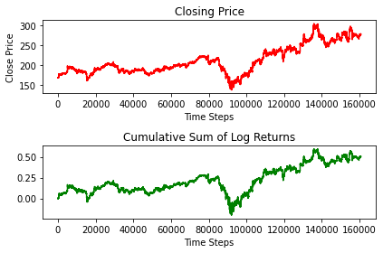
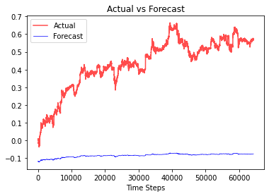

Transformer Model
Training a transformer model to forecast time series sequence of stock closing price Using 10 timesteps to forecast 1 forward timestep
Import
Load Data
df = pd.read_csv('https://raw.githubusercontent.com/ctxj/Time-Series-Transformer-Pytorch/main/FB_raw.csv')
df.head()| date | minute | label | high | low | open | close | average | volume | notional | ... | rsi | long | exit_long | short | exit_short | long_pnl | short_pnl | total_pnl | long_labels | short_labels | |
|---|---|---|---|---|---|---|---|---|---|---|---|---|---|---|---|---|---|---|---|---|---|
| 0 | 2019-04-01 | 09:30 | 09:30 AM | 168.000 | 167.52 | 167.925 | 167.82 | 167.775 | 9294.0 | 1559300.720 | ... | NaN | NaN | 167.925 | NaN | 167.805 | NaN | NaN | 0.0 | NaN | NaN |
| 1 | 2019-04-01 | 09:31 | 09:31 AM | 168.190 | 167.76 | 167.760 | 168.19 | 167.908 | 863.0 | 144904.500 | ... | 100.000000 | NaN | 167.925 | NaN | 167.805 | NaN | NaN | 0.0 | NaN | NaN |
| 2 | 2019-04-01 | 09:32 | 09:32 AM | 168.630 | 168.36 | 168.390 | 168.36 | 168.490 | 2707.0 | 456101.680 | ... | 100.000000 | NaN | 167.925 | NaN | 167.805 | NaN | NaN | 0.0 | NaN | NaN |
| 3 | 2019-04-01 | 09:33 | 09:33 AM | 168.135 | 167.94 | 168.135 | 168.04 | 168.132 | 5503.0 | 925229.920 | ... | 46.468401 | NaN | 167.925 | NaN | 167.805 | NaN | NaN | 0.0 | NaN | NaN |
| 4 | 2019-04-01 | 09:34 | 09:34 AM | 168.200 | 168.00 | 168.045 | 168.01 | 168.189 | 15236.0 | 2562520.845 | ... | 43.215212 | NaN | 167.925 | NaN | 167.805 | NaN | NaN | 0.0 | NaN | NaN |
5 rows × 21 columns
- global variables
- plot
fig, axes = plt.subplots(2,1)
axes[0].plot(close, color='red')
axes[0].set_title('Closing Price')
axes[0].set_ylabel('Close Price')
axes[0].set_xlabel('Time Steps')
axes[1].plot(csum_logreturn, color='green')
axes[1].set_title('Cumulative Sum of Log Returns')
axes[1].set_xlabel('Time Steps')
fig.tight_layout()
plt.show()
Positional Encoder
class PositionalEncoding(nn.Module):
def __init__(self, d_model, max_len=5000):
super(PositionalEncoding, self).__init__()
pe = torch.zeros(max_len, d_model)
position = torch.arange(0, max_len, dtype=torch.float).unsqueeze(1)
div_term = torch.exp(torch.arange(0, d_model, 2).float() * (-math.log(10000.0) / d_model))
pe[:, 0::2] = torch.sin(position * div_term)
pe[:, 1::2] = torch.cos(position * div_term)
pe = pe.unsqueeze(0).transpose(0, 1)
self.register_buffer('pe', pe)
def forward(self, x):
return x + self.pe[:x.size(0), :] Transformer Model
class TransAm(nn.Module):
def __init__(self, feature_size=250, num_layers=1, dropout=0.1):
super(TransAm, self).__init__()
self.model_type = 'Transformer'
self.src_mask = None
self.pos_encoder = PositionalEncoding(feature_size)
self.encoder_layer = nn.TransformerEncoderLayer(d_model=feature_size, nhead=10, dropout=dropout)
self.transformer_encoder = nn.TransformerEncoder(self.encoder_layer, num_layers=num_layers)
self.decoder = nn.Linear(feature_size,1)
self.init_weights()
def init_weights(self):
initrange = 0.1
self.decoder.bias.data.zero_()
self.decoder.weight.data.uniform_(-initrange, initrange)
def forward(self,src):
if self.src_mask is None or self.src_mask.size(0) != len(src):
device = src.device
mask = self._generate_square_subsequent_mask(len(src)).to(device)
self.src_mask = mask
src = self.pos_encoder(src)
output = self.transformer_encoder(src,self.src_mask)
output = self.decoder(output)
return output
def _generate_square_subsequent_mask(self, sz):
mask = (torch.triu(torch.ones(sz, sz)) == 1).transpose(0, 1)
mask = mask.float().masked_fill(mask == 0, float('-inf')).masked_fill(mask == 1, float(0.0))
return mask- Window function
split data into sequence window
Split data in training and testing, prepared in windowed sequences and pass through GPU
def get_data(data, split):
"""Split ratio of training data"""
series = data
split = round(split*len(series))
train_data = series[:split]
test_data = series[split:]
train_data = train_data.cumsum()
train_data = 2*train_data # Training data augmentation, increase amplitude for the model to better generalize.(Scaling by 2 is aribitrary)
# Similar to image transformation to allow model to train on wider data sets
test_data = test_data.cumsum()
train_sequence = create_inout_sequences(train_data,input_window)
train_sequence = train_sequence[:-output_window]
test_data = create_inout_sequences(test_data,input_window)
test_data = test_data[:-output_window]
return train_sequence.to(device), test_data.to(device)Split into training batches
def get_batch(source, i, batch_size):
seq_len = min(batch_size, len(source) - 1 - i)
data = source[i:i+seq_len]
input = torch.stack(torch.stack([item[0] for item in data]).chunk(input_window, 1))
target = torch.stack(torch.stack([item[1] for item in data]).chunk(input_window, 1))
return input, targetTraining function
def train(train_data):
model.train() # Turn on the evaluation mode
total_loss = 0.
start_time = time.time()
for batch, i in enumerate(range(0, len(train_data) - 1, batch_size)):
data, targets = get_batch(train_data, i,batch_size)
optimizer.zero_grad()
output = model(data)
loss = criterion(output, targets)
loss.backward()
torch.nn.utils.clip_grad_norm_(model.parameters(), 0.7)
optimizer.step()
total_loss += loss.item()
log_interval = int(len(train_data) / batch_size / 5)
if batch % log_interval == 0 and batch > 0:
cur_loss = total_loss / log_interval
elapsed = time.time() - start_time
print('| epoch {:3d} | {:5d}/{:5d} batches | '
'lr {:02.10f} | {:5.2f} ms | '
'loss {:5.7f}'.format(
epoch, batch, len(train_data) // batch_size, scheduler.get_lr()[0],
elapsed * 1000 / log_interval,
cur_loss))
total_loss = 0
start_time = time.time()Evaluation function for model after training
def evaluate(eval_model, data_source):
eval_model.eval() # Turn on the evaluation mode
total_loss = 0.
eval_batch_size = 1000
with torch.no_grad():
for i in range(0, len(data_source) - 1, eval_batch_size):
data, targets = get_batch(data_source, i, eval_batch_size)
output = eval_model(data)
total_loss += len(data[0])* criterion(output, targets).cpu().item()
return total_loss / len(data_source)Function to forecast 1 time step from window sequence
def model_forecast(model, seqence):
model.eval()
total_loss = 0.
test_result = torch.Tensor(0)
truth = torch.Tensor(0)
seq = np.pad(seqence, (0, 3), mode='constant', constant_values=(0, 0))
seq = create_inout_sequences(seq, input_window)
seq = seq[:-output_window].to(device)
seq, _ = get_batch(seq, 0, 1)
with torch.no_grad():
for i in range(0, output_window):
output = model(seq[-output_window:])
seq = torch.cat((seq, output[-1:]))
seq = seq.cpu().view(-1).numpy()
return seqFunction to forecast entire sequence
def forecast_seq(model, sequences):
"""Sequences data has to been windowed and passed through device"""
start_timer = time.time()
model.eval()
forecast_seq = torch.Tensor(0)
actual = torch.Tensor(0)
with torch.no_grad():
for i in range(0, len(sequences) - 1):
data, target = get_batch(sequences, i, 1)
output = model(data)
forecast_seq = torch.cat((forecast_seq, output[-1].view(-1).cpu()), 0)
actual = torch.cat((actual, target[-1].view(-1).cpu()), 0)
timed = time.time()-start_timer
print(f"{timed} sec")
return forecast_seq, actualPrepare data for training model
for epoch in range(1, epochs + 1):
epoch_start_time = time.time()
train(train_data)
if(epoch % epochs == 0): # Valid model after last training epoch
val_loss = evaluate(model, val_data)
print('-' * 80)
print('| end of epoch {:3d} | time: {:5.2f}s | valid loss: {:5.7f}'.format(epoch, (time.time() - epoch_start_time), val_loss))
print('-' * 80)
else:
print('-' * 80)
print('| end of epoch {:3d} | time: {:5.2f}s'.format(epoch, (time.time() - epoch_start_time)))
print('-' * 80)
scheduler.step() | epoch 1 | 77/ 385 batches | lr 0.0000500000 | 57.22 ms | loss 0.0136349
| epoch 1 | 154/ 385 batches | lr 0.0000500000 | 56.69 ms | loss 0.0101929
| epoch 1 | 231/ 385 batches | lr 0.0000500000 | 56.71 ms | loss 0.0057727
| epoch 1 | 308/ 385 batches | lr 0.0000500000 | 56.94 ms | loss 0.0042714
| epoch 1 | 385/ 385 batches | lr 0.0000500000 | 56.60 ms | loss 0.0135543
--------------------------------------------------------------------------------
| end of epoch 1 | time: 21.88s
--------------------------------------------------------------------------------
| epoch 2 | 77/ 385 batches | lr 0.0000451250 | 57.75 ms | loss 0.0058133
| epoch 2 | 154/ 385 batches | lr 0.0000451250 | 57.89 ms | loss 0.0048406
| epoch 2 | 231/ 385 batches | lr 0.0000451250 | 56.89 ms | loss 0.0023565
| epoch 2 | 308/ 385 batches | lr 0.0000451250 | 57.11 ms | loss 0.0025112
| epoch 2 | 385/ 385 batches | lr 0.0000451250 | 56.61 ms | loss 0.0074962
--------------------------------------------------------------------------------
| end of epoch 2 | time: 22.04s
--------------------------------------------------------------------------------
| epoch 3 | 77/ 385 batches | lr 0.0000428687 | 57.97 ms | loss 0.0040375
| epoch 3 | 154/ 385 batches | lr 0.0000428687 | 57.34 ms | loss 0.0036393
| epoch 3 | 231/ 385 batches | lr 0.0000428687 | 57.57 ms | loss 0.0015818
| epoch 3 | 308/ 385 batches | lr 0.0000428687 | 57.03 ms | loss 0.0035247
| epoch 3 | 385/ 385 batches | lr 0.0000428687 | 56.50 ms | loss 0.0056444
--------------------------------------------------------------------------------
| end of epoch 3 | time: 22.05s
--------------------------------------------------------------------------------
| epoch 4 | 77/ 385 batches | lr 0.0000407253 | 57.57 ms | loss 0.0046868
| epoch 4 | 154/ 385 batches | lr 0.0000407253 | 56.73 ms | loss 0.0026414
| epoch 4 | 231/ 385 batches | lr 0.0000407253 | 56.21 ms | loss 0.0018956
| epoch 4 | 308/ 385 batches | lr 0.0000407253 | 58.26 ms | loss 0.0027017
| epoch 4 | 385/ 385 batches | lr 0.0000407253 | 56.28 ms | loss 0.0050008
--------------------------------------------------------------------------------
| end of epoch 4 | time: 21.95s
--------------------------------------------------------------------------------
| epoch 5 | 77/ 385 batches | lr 0.0000386890 | 57.32 ms | loss 0.0052833
| epoch 5 | 154/ 385 batches | lr 0.0000386890 | 56.76 ms | loss 0.0036348
| epoch 5 | 231/ 385 batches | lr 0.0000386890 | 57.19 ms | loss 0.0021735
| epoch 5 | 308/ 385 batches | lr 0.0000386890 | 57.64 ms | loss 0.0020005
| epoch 5 | 385/ 385 batches | lr 0.0000386890 | 56.69 ms | loss 0.0055897
--------------------------------------------------------------------------------
| end of epoch 5 | time: 21.99s
--------------------------------------------------------------------------------
| epoch 6 | 77/ 385 batches | lr 0.0000367546 | 57.75 ms | loss 0.0070904
| epoch 6 | 154/ 385 batches | lr 0.0000367546 | 56.02 ms | loss 0.0022925
| epoch 6 | 231/ 385 batches | lr 0.0000367546 | 56.53 ms | loss 0.0018821
| epoch 6 | 308/ 385 batches | lr 0.0000367546 | 57.27 ms | loss 0.0022888
| epoch 6 | 385/ 385 batches | lr 0.0000367546 | 56.54 ms | loss 0.0090193
--------------------------------------------------------------------------------
| end of epoch 6 | time: 21.88s
--------------------------------------------------------------------------------
| epoch 7 | 77/ 385 batches | lr 0.0000349169 | 57.88 ms | loss 0.0068115
| epoch 7 | 154/ 385 batches | lr 0.0000349169 | 57.39 ms | loss 0.0021631
| epoch 7 | 231/ 385 batches | lr 0.0000349169 | 58.06 ms | loss 0.0018259
| epoch 7 | 308/ 385 batches | lr 0.0000349169 | 57.22 ms | loss 0.0022266
| epoch 7 | 385/ 385 batches | lr 0.0000349169 | 56.09 ms | loss 0.0118806
--------------------------------------------------------------------------------
| end of epoch 7 | time: 22.07s
--------------------------------------------------------------------------------
| epoch 8 | 77/ 385 batches | lr 0.0000331710 | 58.05 ms | loss 0.0077954
| epoch 8 | 154/ 385 batches | lr 0.0000331710 | 56.74 ms | loss 0.0031891
| epoch 8 | 231/ 385 batches | lr 0.0000331710 | 56.75 ms | loss 0.0040912
| epoch 8 | 308/ 385 batches | lr 0.0000331710 | 56.93 ms | loss 0.0023997
| epoch 8 | 385/ 385 batches | lr 0.0000331710 | 56.25 ms | loss 0.0081000
--------------------------------------------------------------------------------
| end of epoch 8 | time: 21.92s
--------------------------------------------------------------------------------
| epoch 9 | 77/ 385 batches | lr 0.0000315125 | 57.79 ms | loss 0.0066046
| epoch 9 | 154/ 385 batches | lr 0.0000315125 | 56.83 ms | loss 0.0039425
| epoch 9 | 231/ 385 batches | lr 0.0000315125 | 56.75 ms | loss 0.0037167
| epoch 9 | 308/ 385 batches | lr 0.0000315125 | 57.20 ms | loss 0.0019323
| epoch 9 | 385/ 385 batches | lr 0.0000315125 | 57.33 ms | loss 0.0132667
--------------------------------------------------------------------------------
| end of epoch 9 | time: 22.02s
--------------------------------------------------------------------------------
| epoch 10 | 77/ 385 batches | lr 0.0000299368 | 58.24 ms | loss 0.0085330
| epoch 10 | 154/ 385 batches | lr 0.0000299368 | 57.27 ms | loss 0.0032725
| epoch 10 | 231/ 385 batches | lr 0.0000299368 | 70.65 ms | loss 0.0034041
| epoch 10 | 308/ 385 batches | lr 0.0000299368 | 70.60 ms | loss 0.0015592
| epoch 10 | 385/ 385 batches | lr 0.0000299368 | 68.78 ms | loss 0.0146613
--------------------------------------------------------------------------------
| end of epoch 10 | time: 38.02s | valid loss: 0.2860207
--------------------------------------------------------------------------------TransAm(
(pos_encoder): PositionalEncoding()
(encoder_layer): TransformerEncoderLayer(
(self_attn): MultiheadAttention(
(out_proj): NonDynamicallyQuantizableLinear(in_features=250, out_features=250, bias=True)
)
(linear1): Linear(in_features=250, out_features=2048, bias=True)
(dropout): Dropout(p=0.1, inplace=False)
(linear2): Linear(in_features=2048, out_features=250, bias=True)
(norm1): LayerNorm((250,), eps=1e-05, elementwise_affine=True)
(norm2): LayerNorm((250,), eps=1e-05, elementwise_affine=True)
(dropout1): Dropout(p=0.1, inplace=False)
(dropout2): Dropout(p=0.1, inplace=False)
)
(transformer_encoder): TransformerEncoder(
(layers): ModuleList(
(0): TransformerEncoderLayer(
(self_attn): MultiheadAttention(
(out_proj): NonDynamicallyQuantizableLinear(in_features=250, out_features=250, bias=True)
)
(linear1): Linear(in_features=250, out_features=2048, bias=True)
(dropout): Dropout(p=0.1, inplace=False)
(linear2): Linear(in_features=2048, out_features=250, bias=True)
(norm1): LayerNorm((250,), eps=1e-05, elementwise_affine=True)
(norm2): LayerNorm((250,), eps=1e-05, elementwise_affine=True)
(dropout1): Dropout(p=0.1, inplace=False)
(dropout2): Dropout(p=0.1, inplace=False)
)
)
)
(decoder): Linear(in_features=250, out_features=1, bias=True)
)- Plot forecasted sequence vs. actual
plt.plot(truth, color='red', alpha=0.7)
plt.plot(test_result, color='blue', linewidth=0.7)
plt.title('Actual vs Forecast')
plt.legend(['Actual', 'Forecast'])
plt.xlabel('Time Steps')
plt.show()
- 에폭 수가 너무 적어서 학습이 잘 안된 듯..
- Test random sequence
r = np.random.randint(100000, 160000)
test_forecast = model_forecast(model, csum_logreturn[r: r+10]) # random 10 sequence length
print(f"forecast sequence: {test_forecast}")
print(f"Actual sequence: {csum_logreturn[r: r+11]}")forecast sequence: [ 0.45956996 0.45955116 0.45804468 0.45834616 0.46043515 0.45947587
0.45996502 0.45966405 0.46049154 0.45876053 -0.08363973]
Actual sequence: [0.45956996 0.45955115 0.45804467 0.45834615 0.46043515 0.45947588
0.45996503 0.45966404 0.46049154 0.45876053 0.45747915]